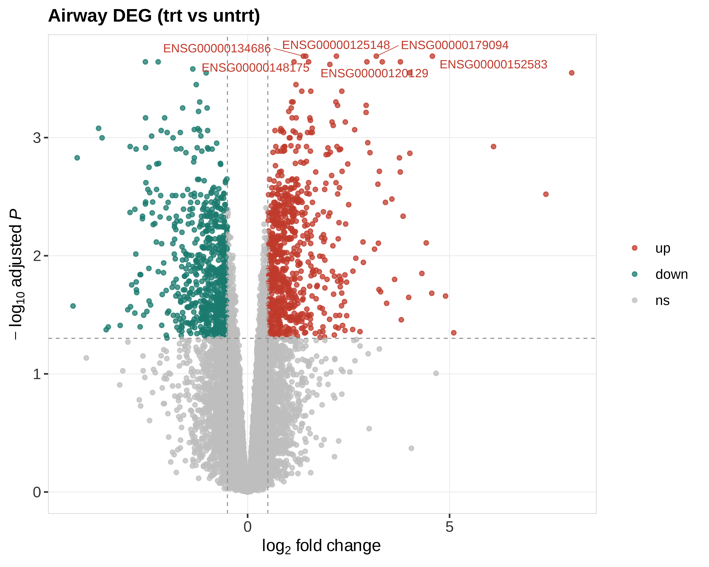
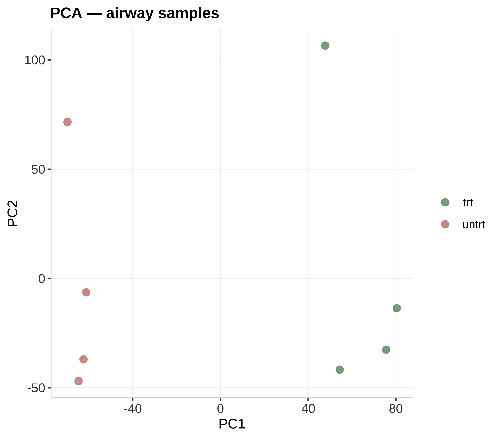
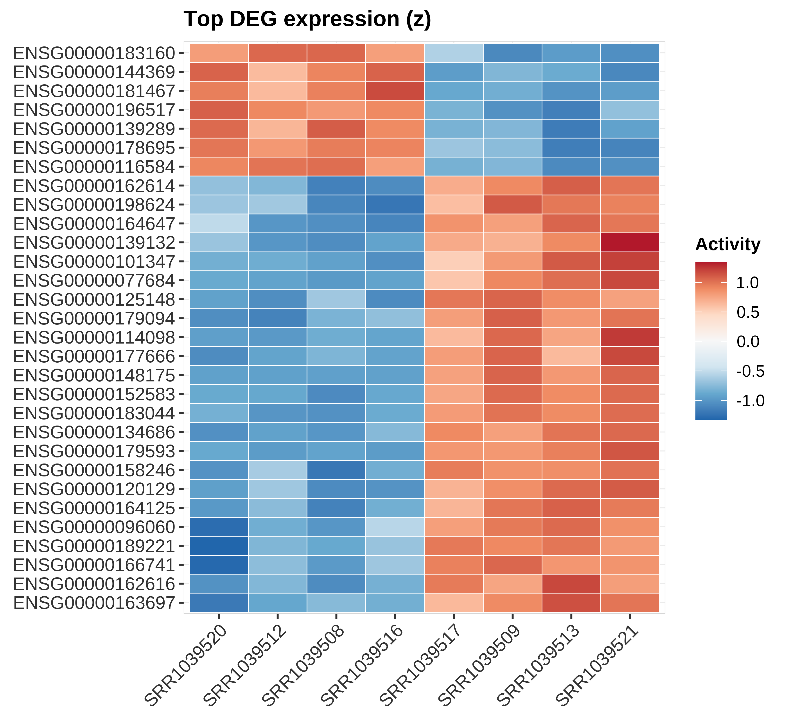
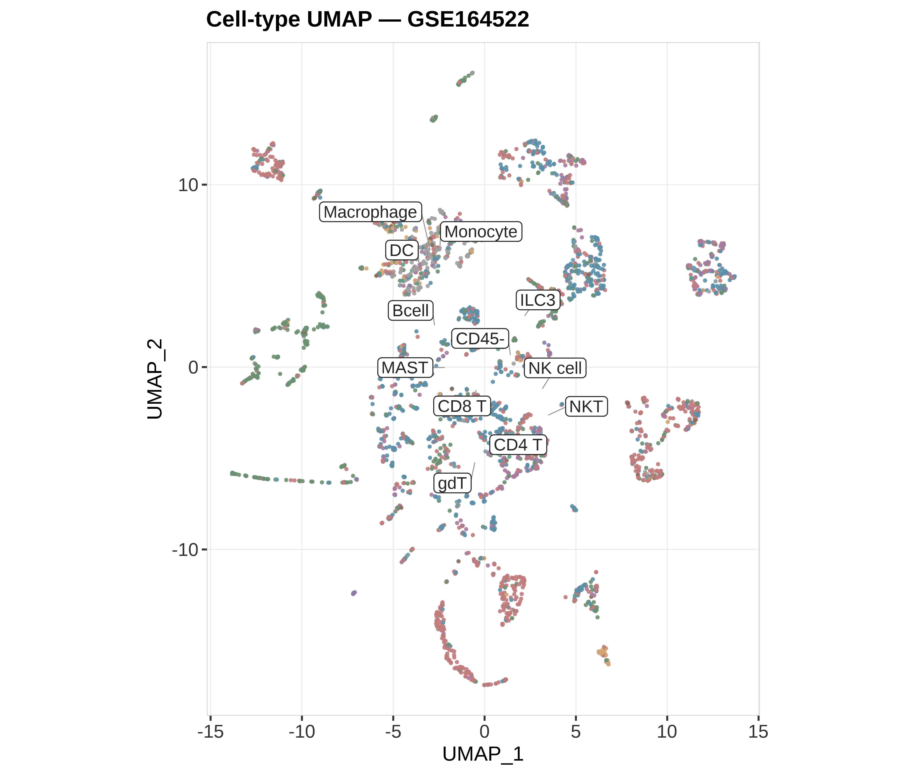

状态：PASS
no skill scripts
data_provenance: REAL
airway counts"skill","stage","n_rows","n_cols","n_samples","group_source","toy","data_provenance","accession","sourced_skill_scripts","notes","checked_at" "DEG-UMAP","post",15926,8,8,"airway trt vs untrt (Bioconductor)",FALSE,"REAL","airway","no skill scripts","volcano+PCA+heatmap+UMAP; data_provenance=REAL","2026-07-19 20:37:20"




REAL：airway limma-voom DEG + PCA + TopDEG heatmap；UMAP 来自 GSE164522。data_provenance=REAL。
生成时间：2026-07-19 20:37:23 · 报告规范：统一交付规范_DeliveryStandards · 版本 v1